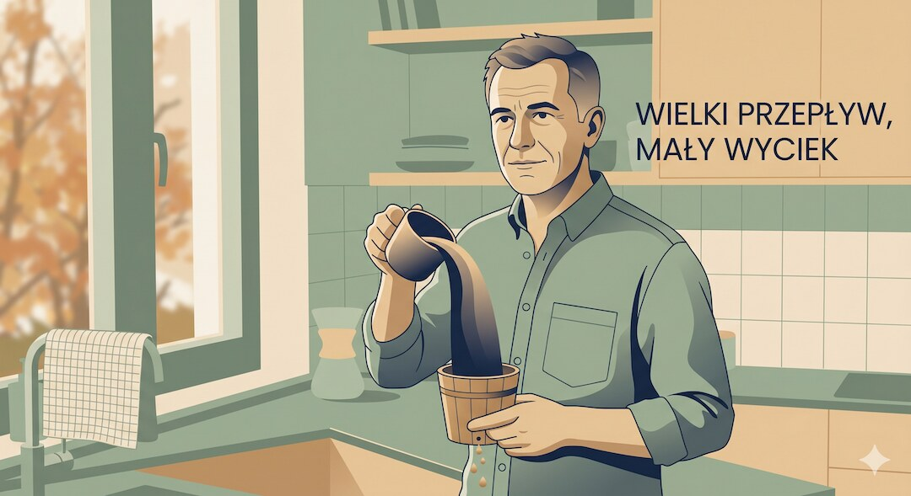
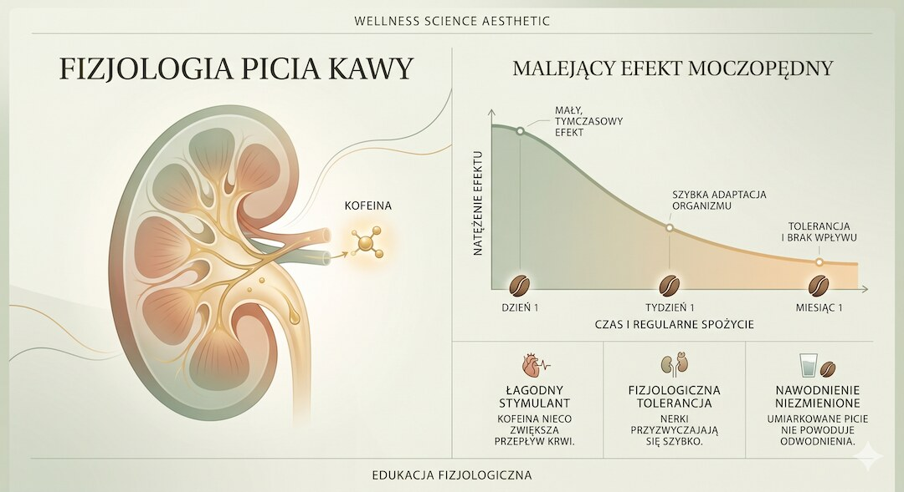
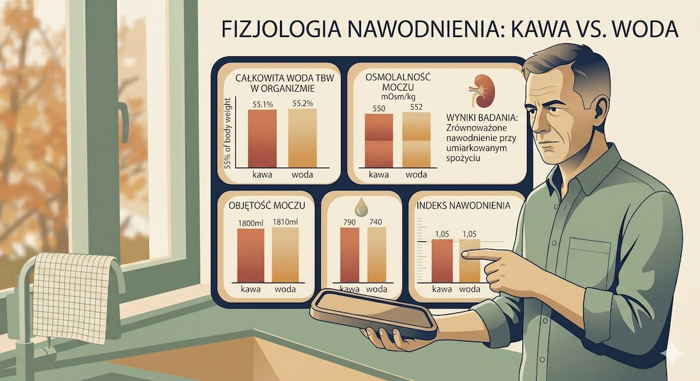
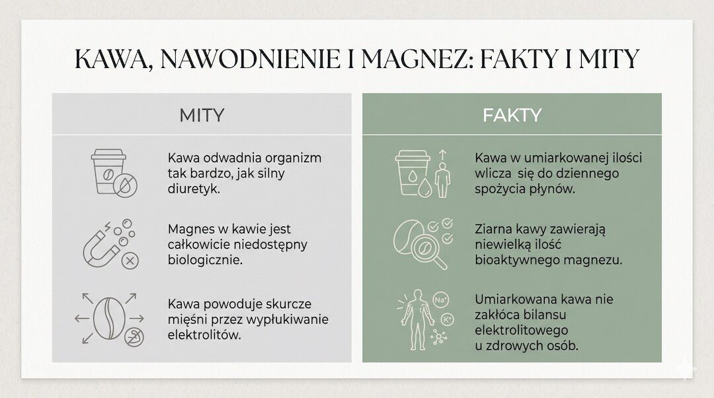
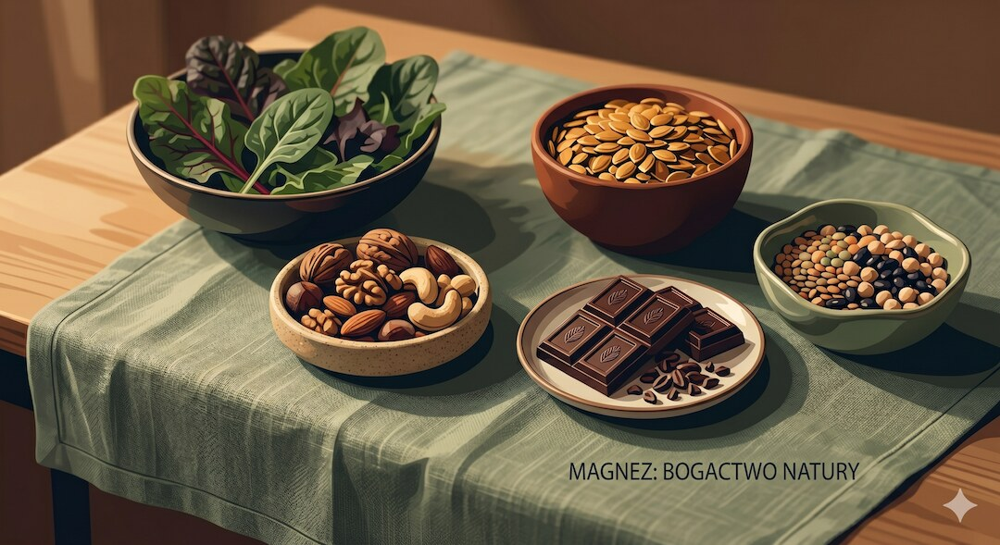
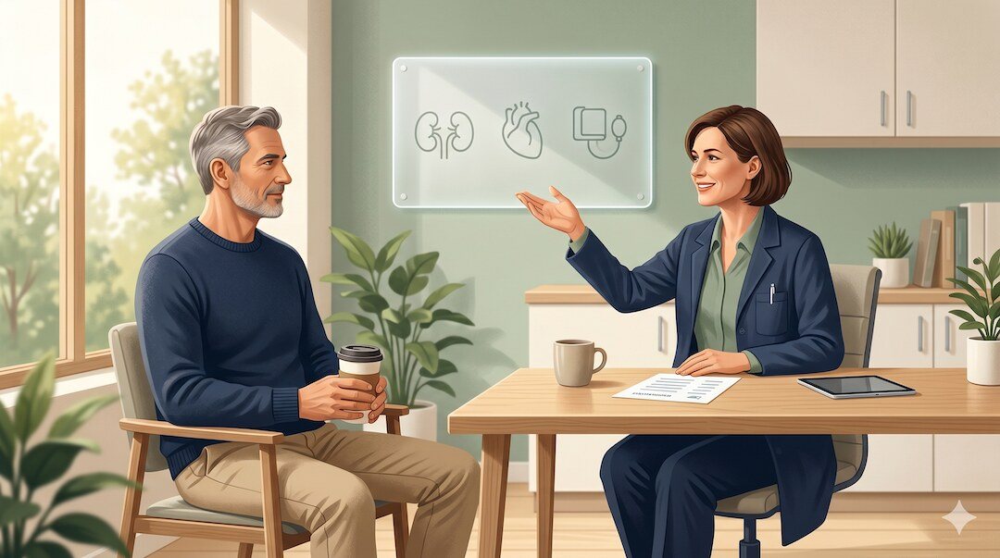

Słyszysz to od lat: kawa odwadnia, wypłukuje magnez, a po pięćdziesiątce lepiej ją odstawić, bo inaczej skurcze i sucha skóra. Brzmi sensownie — w końcu po kawie częściej lecisz do toalety. Tylko że badania mówią co innego. Rozłóżmy to po kolei.
Szybka odpowiedź
Jeśli pijesz kawę regularnie, umiarkowana ilość mieszcząca się łącznie do 400 mg kofeiny dziennie zwykle nie odwadnia, ponieważ płyn z napoju równoważy łagodny efekt moczopędny, a nieco większe wydalanie magnezu u zdrowej osoby z prawidłową dietą nie oznacza niedoboru, dlatego po 50-tce dawkę dopasuj przede wszystkim do snu, ciśnienia, leków i własnego samopoczucia.
Kluczowe wnioski
- Gdy pijesz kawę regularnie, organizm częściowo przyzwyczaja się do kofeiny i jej moczopędne działanie zwykle słabnie.
- Woda z filiżanki z górką pokrywa to nieco częstsze oddawanie moczu — kawa liczy się do dziennego nawodnienia.
- Kofeina może nieco zwiększać wydalanie magnezu, lecz u zdrowej osoby ważniejszy jest całodzienny jadłospis.
- Wyraźny efekt odwadniający pojawia się dopiero przy dużych jednorazowych dawkach kofeiny, a tych w codziennym piciu rzadko dobijasz.
O co właściwie chodzi w tym micie?
Ten mit ma dwie warstwy. Pierwsza: kawa odwadnia, bo jest moczopędna. Druga: skoro częściej sikasz, to tracisz magnez, a po 50-tce i tak go brakuje, więc lepiej kawę odstawić. Obie brzmią rozsądnie i obie krążą po internecie od dekad. Tyle że nauka sprawdziła je dość dokładnie i wyszło inaczej, niż się wydaje.
Sam bym się przy tym zatrzymał, bo logika wygląda żelaznie: pijesz kawę, lecisz do toalety, więc tracisz wodę i minerały. Tylko że organizm to nie prosty rachunek „weszło–wyszło”. Podobny bilans płynów wyjaśniamy w poradniku o nawodnieniu po 50-tce.
Mit brzmi wiarygodnie, bo kofeina faktycznie przejściowo nasila oddawanie moczu, a po pięćdziesiątce częściej słyszymy o niedoborach magnezu, skurczach łydek i suchej skórze. Łatwo więc połączyć te fakty i uznać kawę za winowajcę, choć rzeczywisty bilans płynów i minerałów jest znacznie łagodniejszy.

Co mówi fizjologia?
Kofeina to związek z grupy metyloksantyn. W nerkach zmniejsza wchłanianie zwrotne sodu i przez to przejściowo zwiększa ilość moczu. To prawda. Ale ważne jest tu słowo przejściowo — i to głównie u kogoś, kto kofeiny nie pije regularnie albo dostaje jej naraz bardzo dużo.
U osoby pijącej kawę codziennie organizm wyrabia sobie tolerancję na ten efekt. Wystarczy kilka dni przerwy od kofeiny, żeby ta tolerancja zaczęła znikać. Twój poranny kubek po latach picia działa więc moczopędnie dużo słabiej niż ta sama kawa u kogoś, kto sięga po nią raz na ruski rok.
Z magnezem jest podobnie łagodnie. Kofeina trochę zwiększa jego wydalanie z moczem, ale kawa dostarcza też niewielką ilość tego minerału. Znacznie ważniejszy jest całodzienny jadłospis i rozsądne podejście do suplementacji po 50-tce.

Co mówią dowody?
Najmocniejszy argument to badanie na 50 regularnie pijących kawę mężczyznach. Przez kilka dni pili albo kawę, albo tę samą ilość wody. Różnicy w nawodnieniu nie było żadnej — ani w całkowitej wodzie w organizmie, ani w markerach krwi i moczu, ani w dobowej objętości moczu.
Przeglądy badań idą w tę samą stronę: dawki kofeiny typowe dla zwykłych porcji kawy nie odwadniają. EFSA i FDA wskazują 400 mg kofeiny dziennie jako poziom, który u większości zdrowych dorosłych nie budzi obaw o bezpieczeństwo. Zawartość kofeiny zależy jednak od wielkości i sposobu parzenia.
Wyraźna diureza pojawia się dopiero przy dużych dawkach. W kontrolowanym badaniu efekt moczopędny był widoczny przy kofeinie rzędu 6 mg na kilogram masy ciała (średnio 537 mg naraz), ale już przy 3 mg/kg bilans płynów się nie ruszał. Tego poziomu rzadko dobijasz dwiema–trzema kawami rozłożonymi na cały dzień.
I jeszcze jedno: duży przegląd badań pokazał, że umiarkowane picie kawy (3–4 filiżanki dziennie) wiązało się z niższym ryzykiem zgonu z dowolnej przyczyny i z przyczyn sercowo-naczyniowych niż niepicie w ogóle. Jeśli używasz kawy przed wysiłkiem, zobacz też zasady kawy jako pre-workoutu po 50-tce.

Gdzie jest granica prawdy?
Nie chodzi o to, że mit jest wyssany z palca w stu procentach. Kofeina naprawdę nieco zwiększa wydalanie magnezu i wapnia z moczem oraz przejściowo objętość moczu. To realne zjawiska — tylko w skali, która u zdrowej osoby niczego nie wywraca.
Kłopot może się pojawić w sytuacjach skrajnych: bardzo dużo mocnej kawy, dieta uboga w magnez, leki moczopędne albo stany, w których lekarz i tak każe pilnować płynów i minerałów. Wtedy kawa bywa jednym z wielu czynników, które się sumują. Ale to coś innego niż „każdy po 50-tce musi ją ograniczyć”.

Co naprawdę działa po 50-tce?
Zamiast bać się kawy, ustaw kilka prostych rzeczy. Dla większości zdrowych dorosłych łączna dawka do 400 mg kofeiny dziennie mieści się w bezpiecznym zakresie. Resztę dnia uzupełniaj wodą zgodnie z pragnieniem i aktywnością, ale nie odejmuj kawy od bilansu płynów.
Magnez bierz przede wszystkim z jedzenia: pełne ziarna, orzechy, pestki, strączki, zielone warzywa liściaste, gorzka czekolada. To pewniejsza droga niż liczenie miligramów rzekomo traconych po kawie. A jeśli łapią Cię skurcze łydek, częściej winne są upał i odwodnienie, mocny trening albo za mało magnezu w diecie niż sam fakt picia kawy.
I rzecz oczywista: obserwuj siebie. Jeśli po kolejnej kawie nie zasypiasz albo serce wyraźnie przyspiesza, zejdź z dawki. Kofeina może pogarszać regenerację, dlatego warto równolegle zadbać o sen po 50-tce.

Kiedy lepiej dopytać specjalistę?
Jeśli bierzesz leki moczopędne, masz chorobę nerek, serca, nadciśnienie albo łapią Cię częste, bolesne skurcze mimo dobrej diety — pogadaj z lekarzem o swojej kawie i poziomie magnezu, zamiast zgadywać. Tak samo, gdy planujesz suplementację magnezu: dawka i forma mają znaczenie, a nadmiar też potrafi narobić problemów.
W praktyce kluczowe jest dopasowanie zaleceń do codziennego rytmu dnia i regularna kontrola efektów.

Najczęściej zadawane pytania
Czy kawa odwadnia organizm?
Przy umiarkowanym, regularnym piciu kawa zwykle nie odwadnia. Organizm częściowo przyzwyczaja się do moczopędnego działania kofeiny, a płyn znajdujący się w napoju równoważy nieco częstsze oddawanie moczu. Dlatego kawa może być wliczana do dziennego bilansu płynów, podobnie jak herbata lub inne napoje.
Czy kawa wypłukuje magnez?
Kofeina może nieco zwiększać wydalanie magnezu z moczem, lecz przy umiarkowanym piciu zmiana jest niewielka. U zdrowej osoby, która je produkty bogate w magnez, sama kawa nie powinna powodować niedoboru. Ważniejszy jest całodzienny jadłospis, stan nerek, przyjmowane leki oraz ewentualne choroby przewlekłe.
Ile kawy dziennie można pić po 50-tce?
Dla większości zdrowych dorosłych za poziom bezpieczny uznaje się do 400 mg kofeiny dziennie ze wszystkich źródeł. Liczba filiżanek zależy od wielkości porcji i sposobu parzenia, dlatego lepiej liczyć kofeinę niż kubki. Mniejszą dawkę wybierz przy bezsenności, kołataniu serca, nadciśnieniu lub lekach wchodzących w interakcje.
Skąd biorą się skurcze łydek po kawie?
Samej kawy nie warto uznawać automatycznie za przyczynę skurczów. Częstsze powody to intensywny wysiłek, upał, mała podaż płynów, niedobory żywieniowe albo działanie niektórych leków. Jeśli skurcze są częste, bolesne, jednostronne lub nie ustępują mimo odpoczynku i dobrej diety, skonsultuj je z lekarzem.
Czy po kawie trzeba dopijać dodatkową szklankę wody?
Przy umiarkowanym piciu nie trzeba obowiązkowo dopijać osobnej szklanki wody po każdej kawie, ponieważ napój sam dostarcza płynu. Wodę pij zgodnie z pragnieniem, temperaturą, aktywnością i zaleceniami lekarza. Dodatkowe nawodnienie ma większe znaczenie podczas upału, gorączki, biegunki albo długiego treningu.
Źródła
- Killer SC i wsp. No Evidence of Dehydration with Moderate Daily Coffee Intake (PLOS ONE, 2014)
- Maughan RJ, Griffin J. Caffeine ingestion and fluid balance: a review (PubMed)
- Coffee with High but Not Low Caffeine Content Augments Fluid and Electrolyte Excretion at Rest (Frontiers in Nutrition, 2017)
- EFSA: Caffeine — bezpieczne dzienne spożycie dla zdrowych dorosłych
- Bergman EA i wsp. Effect of dietary caffeine on urinary excretion of calcium, magnesium, sodium and potassium (ScienceDirect)
- Poole R i wsp. Coffee consumption and health: umbrella review of meta-analyses (BMJ, 2017)
- NIH Office of Dietary Supplements: Magnesium — źródła, zapotrzebowanie i bezpieczeństwo
Uwaga: Artykuł ma charakter informacyjny i edukacyjny. Nie zastępuje konsultacji lekarskiej, diagnozy ani leczenia.